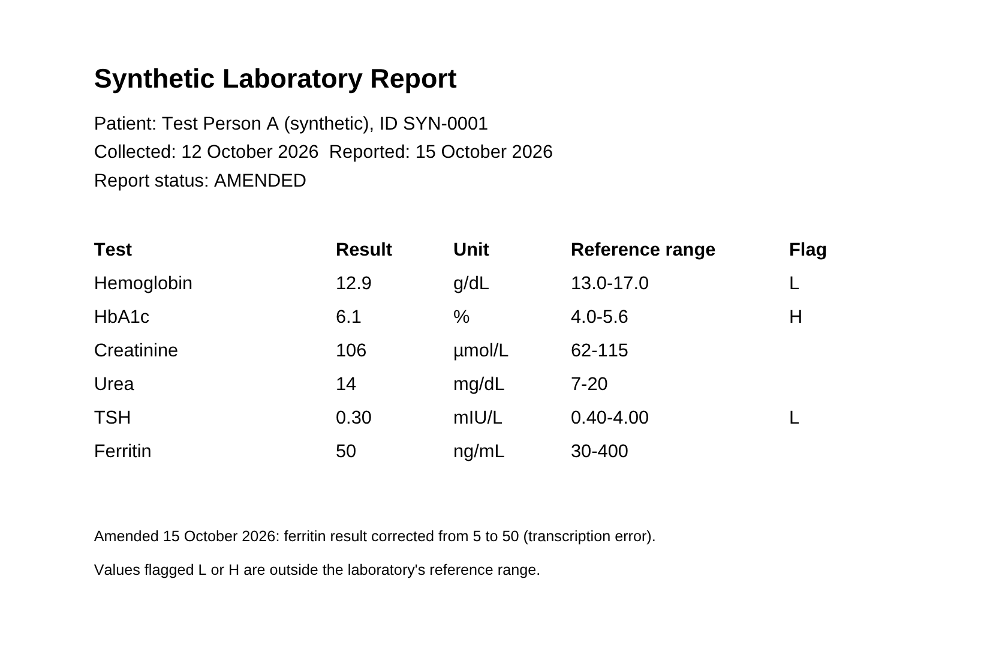

Ask your records out loud.
Voice Memory answers only what your documents support, and ties every claim to the line it came from. It checks amendments, units, patients and approvals before it speaks.
What is SYN-0001's ferritin result?
Your Ferritin result is 50 ng/mL, from 12 October 2026. That's within this lab's range of 30 to 400. Some general background: Ferritin shows how much iron your body has stored. The 12 October 2026 result was corrected from 5 to 50, and I'm using the corrected value.

People read their results before anyone explains them.
68.6% of US adults with online records opened their test results before hearing from a clinician, and about 1 in 3 of them understood those results only fairly well or poorly (JAMA Network Open, August 2026, HINTS 2024, n = 4,982).
40 million people a day ask ChatGPT about health, and ECRI ranks misuse of AI chatbots the top health-technology hazard of 2026 (ECRI, January 2026).
Records change after they are first read. A preliminary result gets amended, a lab switches units, a proposal is revised. An assistant that reads the newest line, or the wrong patient's, sounds just as confident either way.
How an answer is decided
A question arrives as speech. It leaves as one sentence the record supports, or as a refusal that says why.
Bolna hears it
Speech recognition, turn-taking and the voice run on Bolna. The question arrives as text.
Resolve the words
“Forty two thousand” becomes $42,000. “It” becomes the fee you just asked about.
Find the line
Keyword search, with meaning-based search behind the same evidence gate. A quote must match the source exactly.
Check its status
Amended or preliminary, proposed or approved, which patient, which unit. Anything that fails stops here.
Say one sentence
The same sentence is spoken on the call and shown on screen, with the cited line on the original page.
What it catches
Six questions a fluent assistant gets wrong. Each row asks the live engine below.
Colour is record status throughout: superseded proposed or preliminary refused what the engine says
Ask the records, out loud or typed
The live evidence engine on fictional documents. Every answer is computed now, with the line it rests on.
Pick a question, type your own, or call and ask out loud.
Answers come from the documents only. No language model writes them.
The 80-second film
Every value remembers where it came from, and what replaced it.
Reports, values and the exact sentences behind them, joined by corrects, supersedes and not comparable edges. It is the same graph the engine answers from.
Open the memory graphFor agents and scripts
The same engine answers over a key-free JSON API. Point an agent at llms.txt or the OpenAPI description; answers come back with a verdict and the exact quoted lines.
curl -s https://voice-memory-beige.vercel.app/api/public/ask \
-H 'content-type: application/json' \
-d '{"case":"health","question":"Has creatinine gone up since September?"}'
{ "lead": { "verdict": "NOT_COMPARABLE",
"text": "I can't compare your two Creatinine results: the 3 September 2026
one is in mg/dL and the 12 October 2026 one is in µmol/L…",
"citations": [ { "title": "a-2026-10-amended.pdf",
"quote": "| Creatinine | 106 | μmol/L | 62-115 | |" }, … ] } }
The verdict is a fixed label, not prose: for example LATEST, NOT_COMPARABLE,
AMBIGUOUS_PATIENT, PROPOSED, OPEN, NO-RECORD or
UNKNOWN. An agent should pass on text and its citations as they are, rather than
reword them: the sentence is what the evidence gate checked.
Where it stands
Built for the Bolna Symphony Buildathon. Every patient, value and company here is fictional.
- ShippedQuestions by voice on a live Bolna call, or typed, on this page.
- ShippedAmended, preliminary, proposed, superseded and still-open values, tracked per value; lab results compared across reports, refused when units or patients differ.
- ShippedPDF, Word, scanned image and text ingestion with page-anchored citations; lab explanations in English, Hindi or Hinglish.
- ShippedYour own documents on this page, in a private workspace that is deleted after 30 idle minutes.
- NextParaphrase-aware search with a dense retriever behind the same evidence gate, measured on held-out questions.
- NextA benchmark of real, messy records written by people outside the team.
- NextClinician review of lab explanations before any patient pilot.
- NextPhone-number calls and WhatsApp voice notes through Bolna.